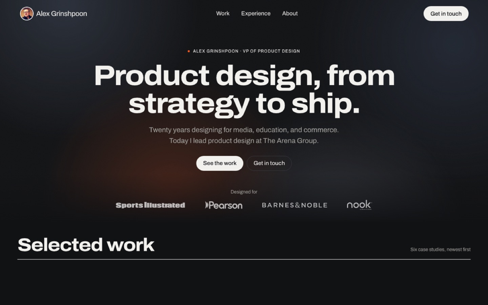
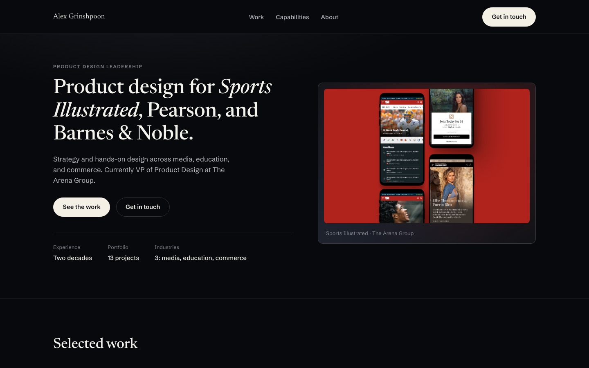
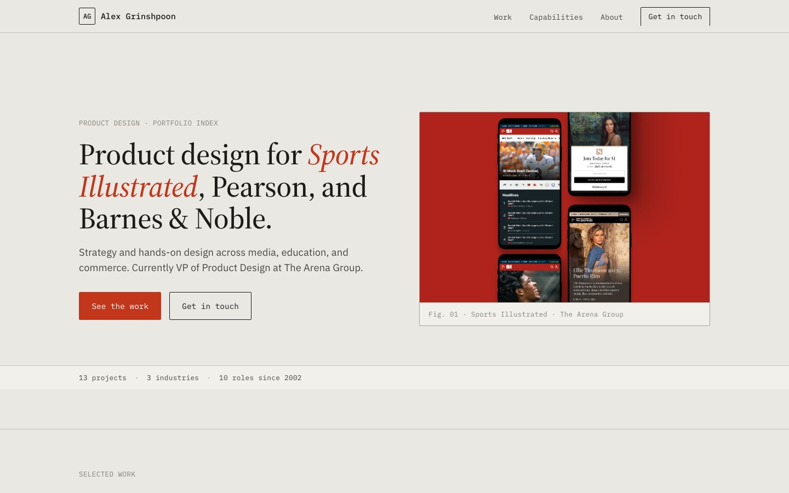
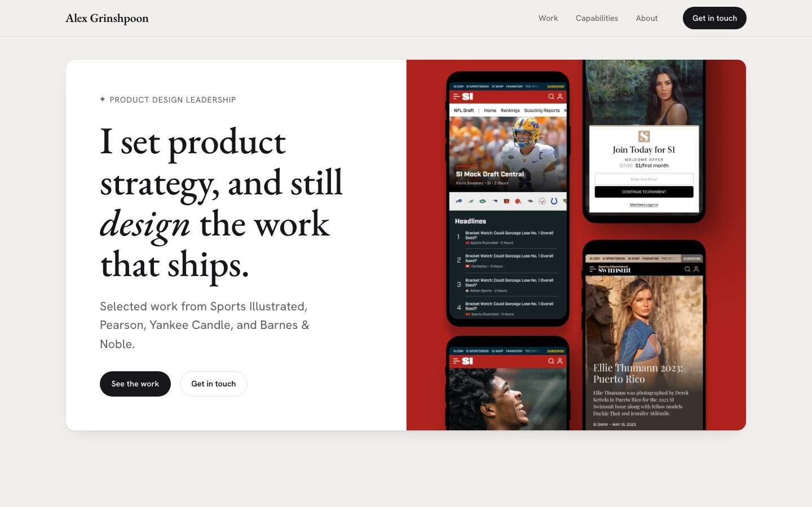
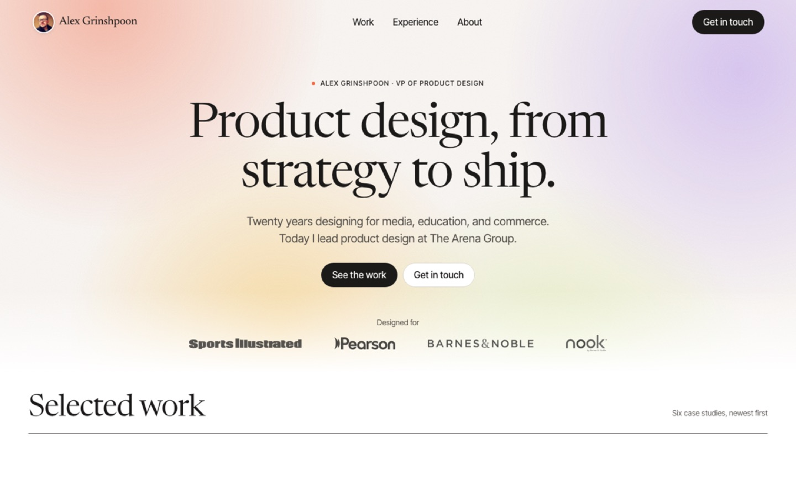
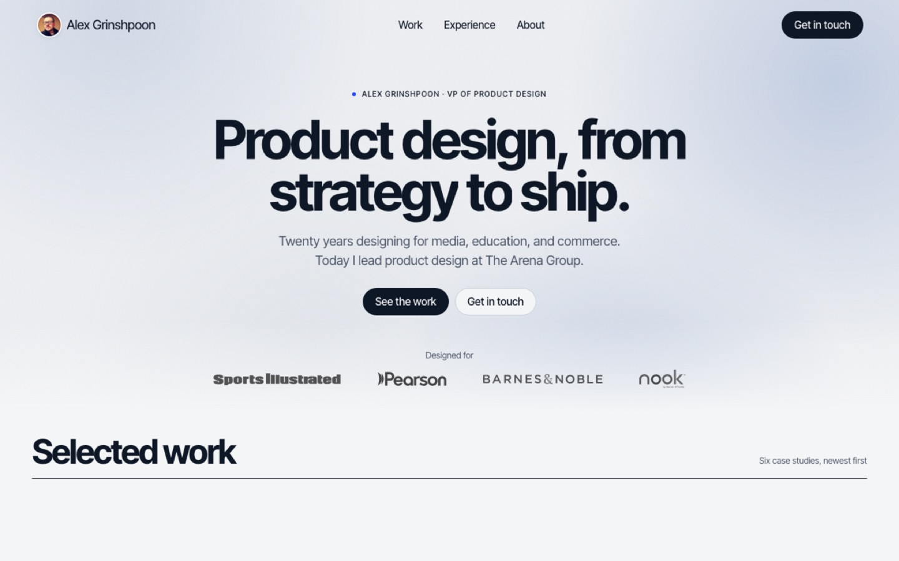
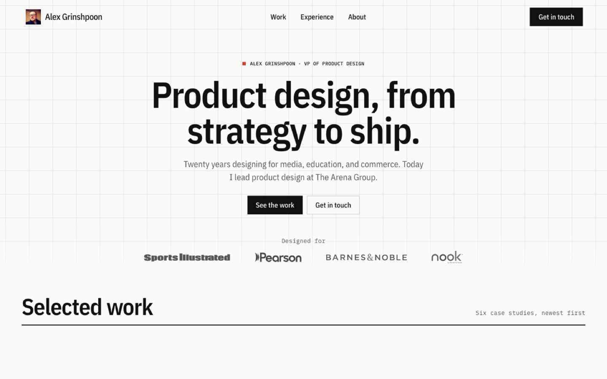

Designing this portfolio with AI
A new end-to-end way of working: I set the direction and made the calls; AI agents drafted, built, and reviewed. From brief to published site in about a week.
- Role
- Designer and director
- Agent
- Claude Code
- Skills
- impeccable, design-taste-frontend, designpowers
- Output
- Static site on GitHub Pages

The brief
Redesign my portfolio for one job: help a recruiter or hiring leader understand, in under a minute, what kind of product designer I am and what I have shipped.
The constraint that shaped everything: the old site states no outcomes, so nothing could be invented. Every claim on the new site had to trace back to a source.
The workflow
Six moves, each one run by agents and decided by me.
- Brief. An interview-led design brief: audience, positioning, and a recency-first structure.
- PRD. The impeccable skill captured product context, users, and principles in PRODUCT.md.
- Inventory. An agent catalogued the old site: 13 projects, and no stated outcomes.
- Deliberation. Four design directions built in parallel, then three alternative themes.
- Review. Critique, accessibility, and copy agents reviewed each round; every finding was fixed or logged.
- Ship. Static HTML, CSS, and JavaScript with self-hosted assets, published to GitHub Pages.
Four directions, in parallel
Built at the same time from one shared content file, so they differed only in design. I chose Frame.




Refining the look
A softer editorial pass, then three sturdier themes over the same page. I chose Graphite.



My calls
The agents drafted, built, and checked. The direction was mine: lead with the work, not the bio; two typefaces, then one; one hero zone instead of a banner image; a uniform grid instead of a showcase; a sturdier, darker look.
The rule I held throughout: no invented metrics. Where a result belongs and I do not have it yet, the page says nothing rather than something false.
The prototype
You are looking at it. The published build lives in a public repository.